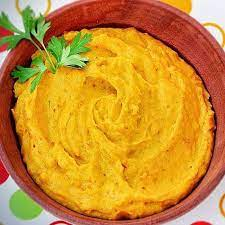

Vatapá

Descrição
Vatapá é um prato típico da culinária afro-brasileira. O seu preparo pode incluir pão molhado ou farinha de rosca, fubá, gengibre, pimenta-malagueta, amendoim, cravo,
castanha de caju, leite desnatado, azeite de oliva, cebola, alho e tomate. Pode ser preparado com camarões frescos inteiros, ou secos e moídos, com peixe, com bacalhau ou com carne de
frango, acompanhados de arroz. A sua consistência é cremosa.
Ingredientes
- 1/2 kg de camarão descascado e lavado, sem cabeça e rabo
- 2 cebolas médias
- 2 tomates
- 1 leite de coco
- 1 azeite de dendê
- cheiro verde picado
- 10 pães
- 2 pimentas cheirosas
- sal e pimentas a gosto
Modo de preparo
- Refogue o camarão com 3 colheres de dendê junto com a cebola, o tomate, cheiro verde e pimenta cheirosa, reserve.
- Bata no liquidificador os pães com água, para 2 pães, 1 copo de água
- Despeje o pão batido em uma panela e leve ao fogo.
- Deixe ferver, mexendo sempre, ele começará a engrossar.
- Quando começar a ferver acrescente o restante do dendê.
- Acrescente o camarão refogado.
- Adicione o sal e pimenta, mexendo sempre para não grudar no fundo da panela.
- Quando estiver quase pronto misture o leite de coco e retire do fogo.